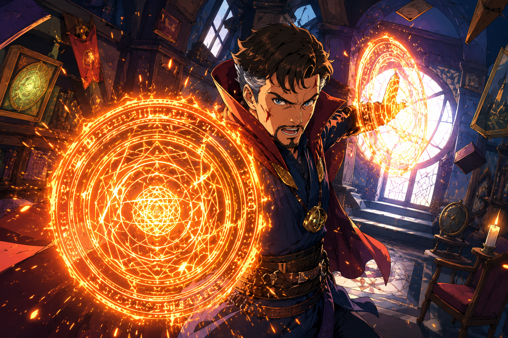

CONTROL THE MAGIC WITH YOUR HANDS
A Python-powered computer vision experience that transforms real-time hand gestures into interactive magical effects.
Detect and track hand landmarks using MediaPipe and computer vision technology.
Recognize different hand gestures and convert them into interactive actions.
Create immersive visual effects such as portals, energy rings and interactive spell effects.
Detect hand landmarks in real time through the webcam.
Use hand gestures to trigger different magical actions.
Generate immersive portal-style visual effects.
Connect actions with audio feedback for a more immersive experience.
Virtual Dr. Strange combines hand tracking, gesture recognition and visual effects to create a futuristic interactive experience.
Core programming language
Computer vision processing
Hand landmark detection
Numerical processing

Project Demo
Run the Python application to experience it.The main application uses your webcam to detect hand gestures and trigger visual effects in real time.
Explore the source code and build your own interactive experience.
🚀 Explore Project